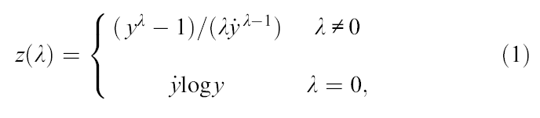
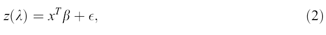
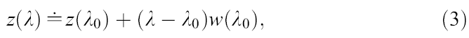
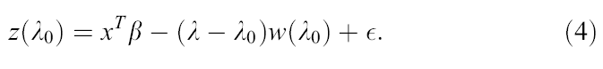
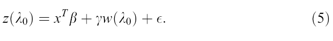

| Flexible Statistics Data Analysis Toolbox™ |
|
| Provide feedback on FSDA toolbox |
Approximate score test statistic for testing the transformation λ = λ0
Box and Cox (1964) analyze the normalized power transformation

where symbol y with dot on top denotes the geometric mean of the observations. When λ = 1, there is no transformation: λ = 1/2 is the square root transformation, λ = 0 gives the log transformation and λ = −1 the reciprocal. These are the most widely used transformations, frequently supported by some empirical reasoning. For example, measurements of concentration often have a standard deviation proportional to the mean, so that the variance of the logged response is approximately constant. For this form of transformation to be applicable, all observations need to be positive. For it to be possible to detect the need for a transformation the ratio of largest to smallest observation should not be too close to one. A similar requirement applies to the transformation of explanatory variables.
The hope is that, for
some λ which has to be estimated, the transformed
observations will satisfy the linear regression model.

where x is p-times-1 and the errors are independently normally distributed with constant variance σ2. For inference about the transformation parameter λ, Box and Cox suggest the likelihood ratio test statistic. For regression models, a computationally simpler alternative test of the hypothesis λ = λ0 is the approximate score statistic derived by Taylor series expansion of Eq. (1).

where
 .
.
If the linearized response (3) is substituted in the regression model (2), the model becomes

Because Eq. (4) is again a regression model with an extra variable w(λ0) derived from the transformation, the new variable is called the constructed variable for the transformation. If the true value of λ is close to λ0, the coefficient (λ-λ0) of the constructed variable will be small. The regression model (4) can be rewritten more conventionally by putting γ =-(λ-λ0) when;

Small values of γ then indicate that no transformation is necessary. The approximate score statistic for testing the transformation λ = λ0 (which is often denoted in the statistical literature with symbol Tp(λ)) is just the t-statistic for the coefficient of regression on w(λ0) in Eq. (5).
Compute the score test for the wool dataset:
XX=load('wool.txt')
y=XX(:,end);
X=XX(:,1:end-1);
% Compute the score test using the five most common values of the transformation
% parameter
[outSc]=Score(y,X)
outSc.Score =
17.7059
7.4927
-0.9122
-9.5511
-18.5576
The constructed variable is not significant when we consider λ=0
Compute the score test for the loyalty cards dataset:
load('loyalty.txt');
y=loyalty(:,4);
X=loyalty(:,1:3);
% la = vector containing the values of λ which have to be tested
la=[0.25 1/3 0.4 0.5];
[outSc]=Score(y,X,'la',la);
outSc =
4.3160
-0.2124
-3.8334
-9.4717
Using all the observations it seems that the third root is the best value of the transformation parameter.
| Provide feedback on FSDA toolbox |
|
|
Transformations in linear regression | Forward Score test |
|